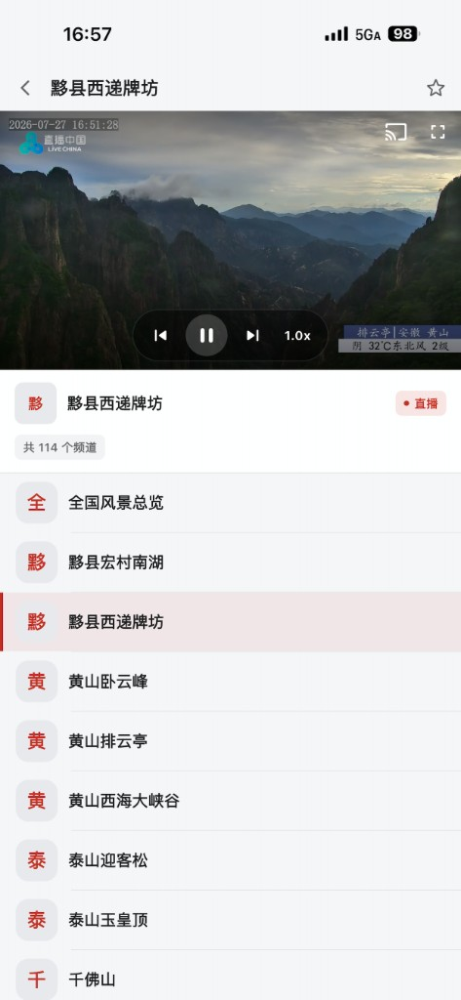
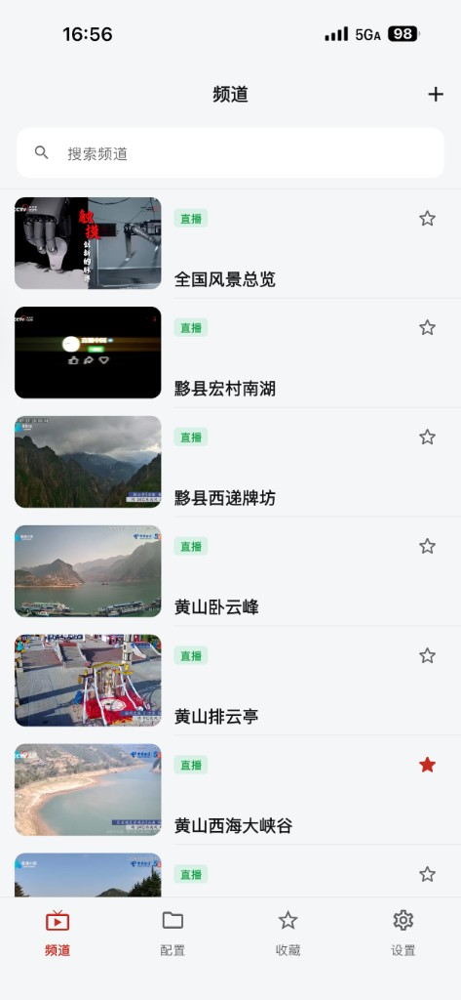
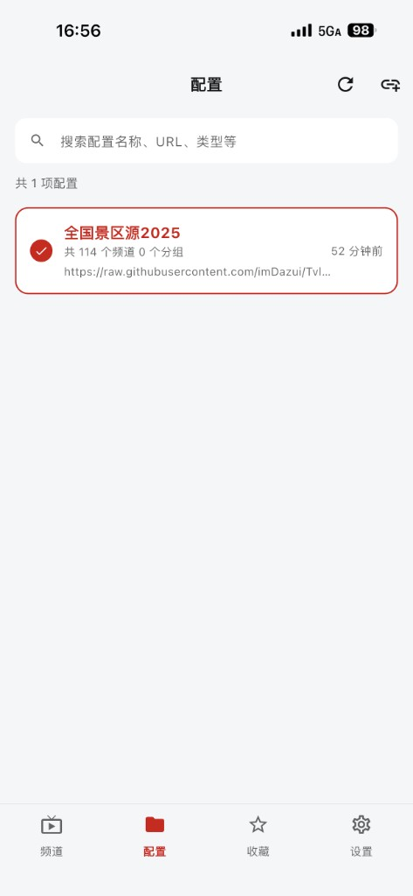
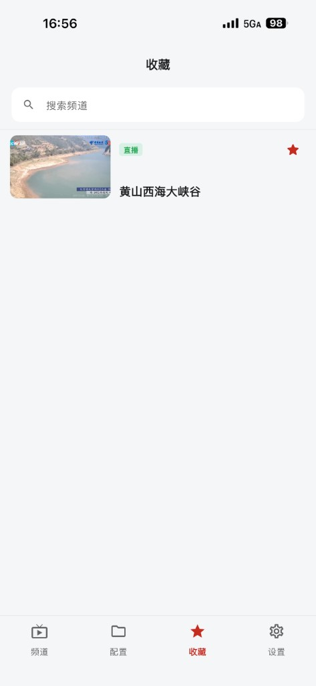

频道浏览
支持搜索、分类筛选与预览图展示，常用频道更容易被快速找到。
IPTV直播
面向日常观看与订阅管理场景打造，支持频道搜索、收藏、配置管理、多线路播放与全屏观看， 让直播内容触手可达。

核心能力
IPTV直播采用清晰的信息层级与轻量交互，让添加订阅、查找频道、进入播放都更自然。
支持搜索、分类筛选与预览图展示，常用频道更容易被快速找到。
支持添加订阅链接、刷新配置数据，并在多个直播源之间灵活切换。
将频道加入收藏列表，保留个人常用观看入口，减少重复查找。
支持全屏观看、多线路切换、倍速控制与投屏，兼顾移动端与大屏场景。
产品截图
从频道浏览到配置管理，再到收藏与播放页，完整展示 IPTV直播 的主要界面。

快速浏览频道列表，支持搜索、收藏与直接进入播放。

集中管理订阅链接，查看频道数量、分组数量与刷新状态。

将常看内容独立收纳，形成个人专属的快速访问列表。
在沉浸式界面中观看直播，切换线路、查看频道信息并进入全屏。
立即体验
适合需要管理多个订阅源、收藏常用频道，并希望获得流畅播放体验的用户。